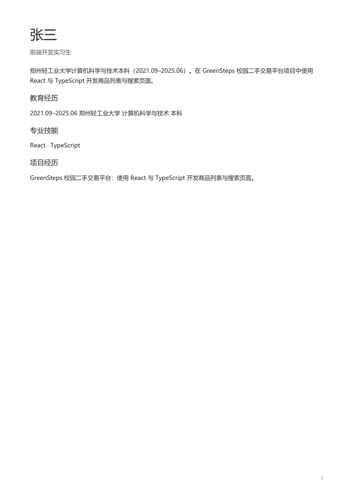
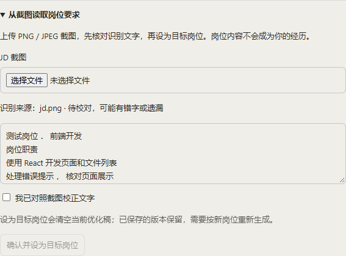
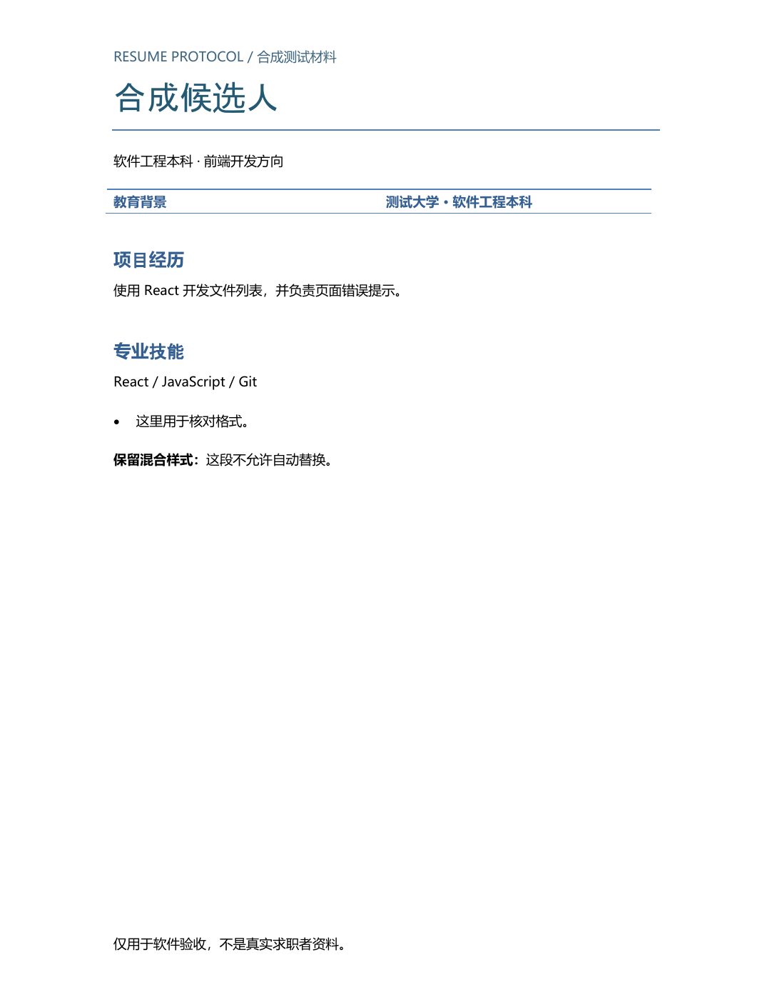
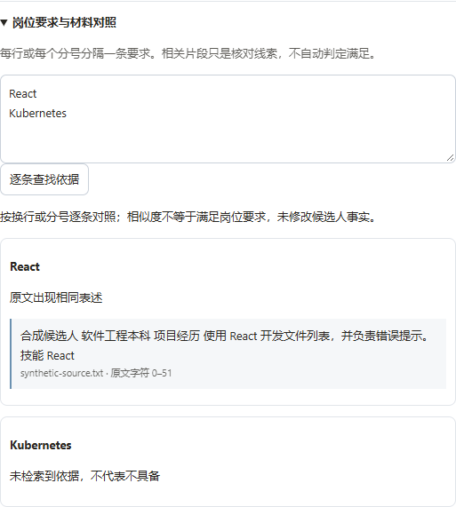
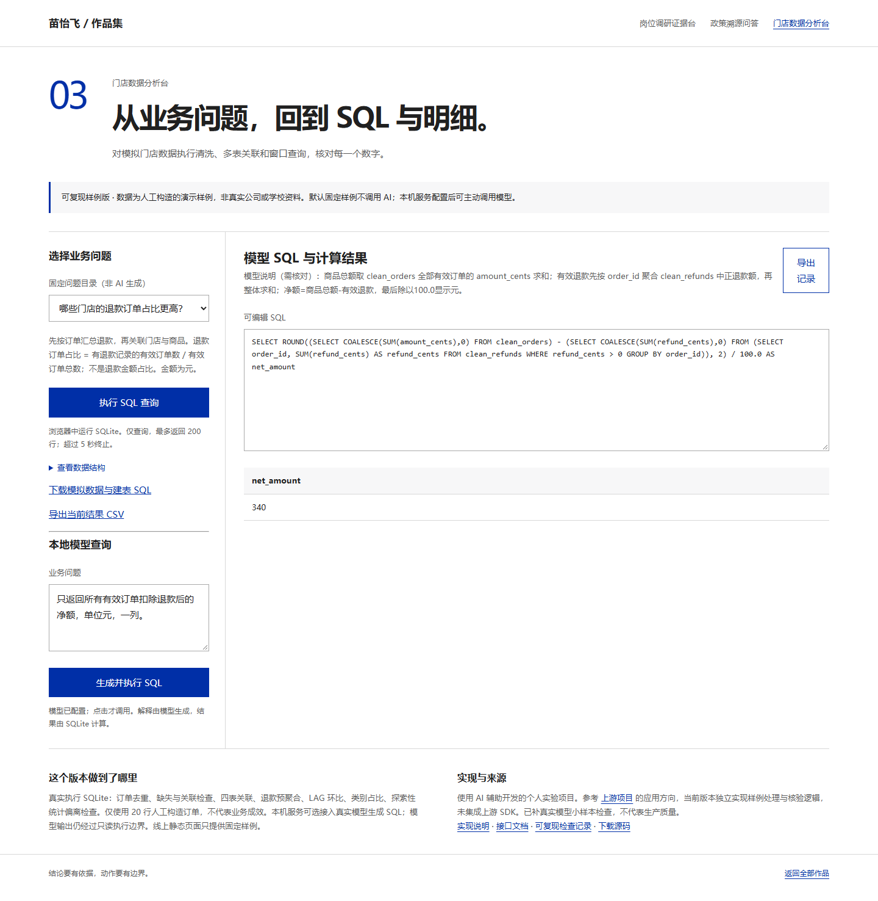

把结果放出来，
也把边界说清楚。
这里汇总实际运行记录与截图。测试通过只说明所列样例符合预期，不代表生产准确率。新增修复和验证使用 AI 辅助开发，个人职责与团队成果分别说明。
AnythingLLM · 候选人证据检索评测
新增评测界面、任务 API 与 BM25 / RRF 混合召回；真实 multilingual-e5-small、pgvector 与 MiniLM 对照已跑通。30 项核心测试、15 项 HTTP 鉴权检查、10 项 pgvector 集成检查通过。
仅 20 道合成开发题，混合召回没有显示指标增益，英文重排发生退化；未验证生产规模与最终生成。
Resume Protocol
近期补做真实模型调用：使用虚构候选人材料，走通上传 → 用户提供 JD → 生成与现有服务端校验 → PDF / DOCX 导出。原始报告保留“机械检查通过、语义复核待完成”的状态；后续人工检查范围有限。
- 事实保留来源、原文与位置；检索范围和工具权限由服务端确定。
- 已知毕业日期推断工龄的错误增加有限规则保护，不宣称能阻止所有错误推论。
- PDF 已检查中文页面；DOCX 检查内容与结构，未独立渲染 Word 版式。

本地验证版，未将这轮修改推送到团队仓库；不是自然路由准确率或完整事实核验评测。
从岗位截图开始，保留原 DOCX 的样式
新增截图 OCR → 用户校对 → 目标岗位确认，以及原 DOCX → 选段修改 → 差异确认 → 原样式版本下载。两类输入独立保存，不把岗位要求写成候选人的经历。


九项浏览器/API 流程检查、五项 OOXML 单元测试通过；全量回归与构建通过。检查了原文件不覆盖、版本刷新后保留、跨账号拒绝、旧截图确认拒绝及旧文本冲突。
原样式当前只支持 DOCX 普通同样式段落；复杂对象、混合字体和更长文字不自动替换，PDF 原样式编辑暂不支持。字符长度限制不是完整排版校验，需下载预览稿检查。结果只来自合成截图和一个 DOCX 模板，不代表任意模板都保持分页。本地功能代码未推送团队仓库。

修改前后可核对，保存版本可恢复
在原有简历预览中补充三个环节：选定条目手改或生成 AI 建议，查看前后差异并确认；按岗位要求检索原文；保存版本、恢复旧稿并导出指定版本。
- 真实 DeepSeek 经现有 SDK 返回局部建议，明确确认后写入，再恢复原稿。
- 浏览器验证预览、放弃、单条接受、岗位证据展示、刷新后版本保留。
- 恢复旧稿后导出已保存的新版本，PDF/DOCX 提取文本均与指定版本一致。
- 四项服务层测试覆盖跨账号、无依据数字、过期稿与来源变化、建议作废；桌面与手机检查无页面横向溢出。


初稿为预置的虚构材料，本次验证从局部修改开始；不能视为重新完成上传到生成全过程，也不是语义正确率。字面数字检查无法发现所有事实错配，仍需人工复核。DOCX 未在 Word 独立渲染。本地新增代码未推送团队仓库，使用 AI 辅助开发与验收。

论文模板保护工具
把“正文可以改、受保护部件不能误改”写成可运行的检查；生成 JSON 审计报告，定位变化部件。
本轮检查覆盖
- 未改动文件与正常正文编辑放行。
- 封面、页眉、关联图片、样式与关系变化被拦截。
- 边界缺失、旧版及不完整快照拒绝通过。
- 报告或快照输出不能覆盖原文档，硬链接别名也检查。
- 模拟报告替换失败，原有报告仍保留。
数据是最小合成 ZIP/XML 文件，非完整可渲染学校模板。尚未在真实论文上验证；哈希一致不能证明排版正确或引用真实。
门店数据分析台
金额用整数“分”聚合；一条订单保留多个异常原因。同订单号但内容冲突时整组隔离，关联退款一并排除，原始记录保留。退款先按订单汇总，避免一对多关联放大金额。
本地可选调用 DeepSeek 生成 SQL，再经过只读边界实际执行。六道人工构造问题首次通过五道：一题多返回门店 ID 列，按契约判失败；补充通用输出列约束后，同六题复测通过。

同题复测属于开发回归，不是独立留出评测，不能写成准确率 100%。GitHub Pages 上只运行合成数据固定查询；没有在线模型后端，也没有真实业务成效数据。
岗位调研证据台与政策问答仍为人工构造样例，没有新增联网搜索或真实政策库。
2026.11.11 · 技术核对
实现与职责分别说明
Resume Protocol 已补充真实本地向量检索，新增验证单独记录。云栈本地代码为 Vue 3 / TypeScript，文件分片上传不等于 RAG 文档切分；本次类型检查因工具链报错未完成。
向量与关键词混合召回
上传文本按 450 字符切分。本地 multilingual-e5-small 生成 384 维向量，SQLite 按用户与候选人隔离保存，精确余弦检索与关键词召回通过 RRF 融合，保留来源与证据预算。索引在检索时按内容哈希更新。六题合成开发样例：Top-1 从关键词 1/6 到混合 3/6，Hit@3 为 6/6；不是独立准确率，未接入 Rerank 或 ANN。
全量回归、构建和六步浏览器验收通过；浏览器验收使用真实 Embedding，生成模型为固定替身。已检查跨用户拒绝、缓存复用、更新及删除。
0.8 阈值未独立校准；纯英文技术名保留精确关键词约束。首次加载需下载模型，未验证生产规模和完整生成语义。
查看逐题结果与验证范围